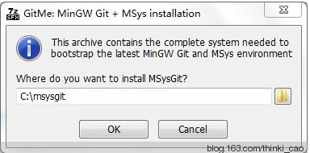
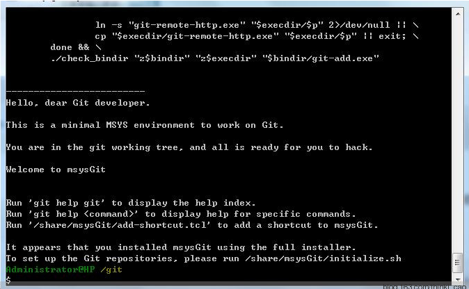
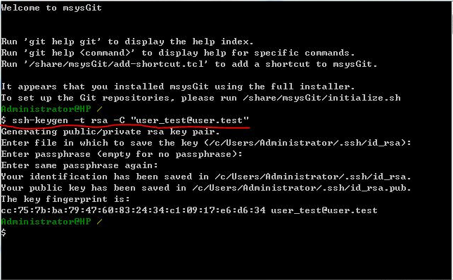
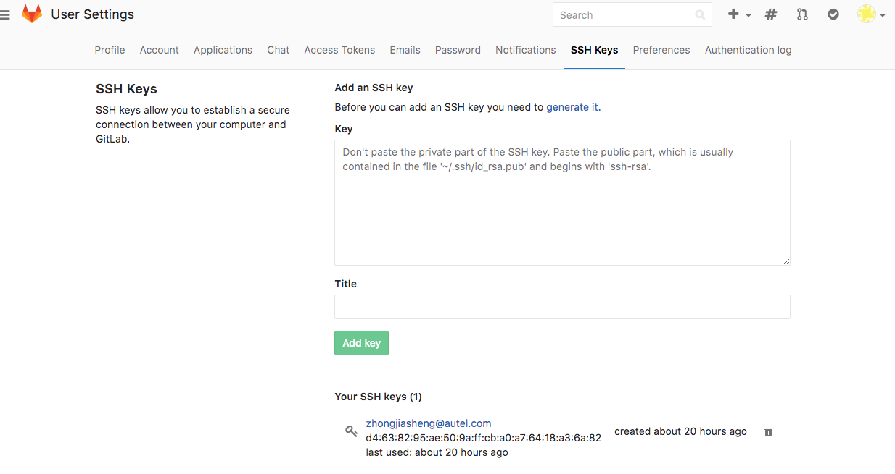

gitlab
Windows下Git配置与使用指南 Gitlab
安装msysGit
下载软件msysGit
打开之后设置安装路径，默认为C:\msysgit，如图：

点击“OK”以后开始安装，首先将文件解压到安装目下，然后会自动开始编译，编译结束之后，若看到与下图中类似的内容，则表明编译成功。

访问
访问网站http://10.240.3.82:8088
账号：姓名拼音
初始密码：Autel123456
拷贝ssh公钥到服务器
生成钥匙对
本地现在运行C:\msysgit\msysgit\msys.bat，并执行以下命令ssh-keygen -t rsa -C "user_test@user.test"，如图：

拷贝
密钥生成成功！密钥分成两个文件，一个私钥（id_rsa）、一个公钥（id_rsa.pub）。私钥保存在你的电脑上，公钥添加到服务器上。用户必须拥有与服务器公钥所配对的私钥，才能访问服务器上的代码库。

仓库管理
clone:git clone ssh://git@10.240.3.82:2222/root/TechnologyShare.git
更新:git pull
提交:git add ., git commit -m"update", git push origin master
详情见git使用说明